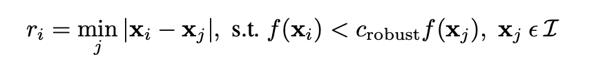
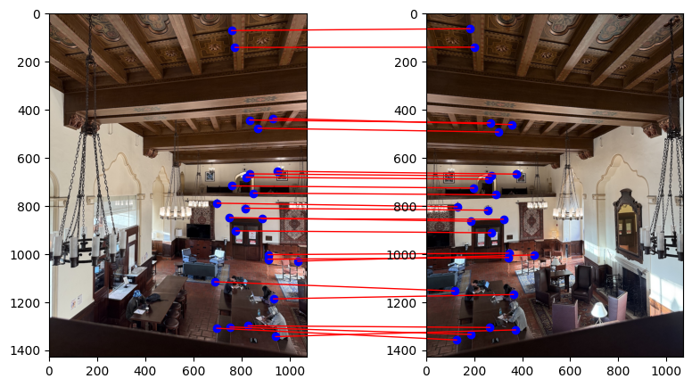
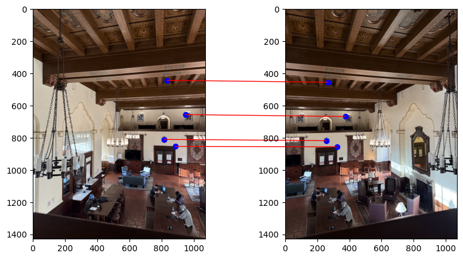

Project 4:
Stitching Photo Mosaics
This project is about stitching together many different photos of the same scene into a single bigger mosaic. In the first part we will warp and composite some photographs that we have taken, create some panoramas but using hand picked correspondances. In the second part we will introduce a way to automatically find correspondances between images and stitch them together.
Part A: Image Warping and Mosaicing
Part 1 and 2: Shoot and digitize pictures; Recover homographies
Here are some images I have used for this project. I have marked the corner points of the objects in the image I want to retify. For the first image, we are going to rectify a symbol that is on the roof of the building. For the second image, we are going to rectify a table that we are viewing form an angle.

This is the first image we are going to rectfy. Goal is to rectify the symbol on the roof

This is our second image we are going to rectify, we want to try to rectify the table
Our first task here is to find the homographies that map the points in the first image to the points of our target. For the symbol on the roof, we want to warp the points that I have marked in the image 1 shown above, into a rectangle with the points (0,0), (0,200), (100,0), (100,200).
To find the points we have to solve the first solve for this equation. Where the Homography matrix are
the Values H11 to H33, where H33 just has the value 1.

The homography matrix is a 3x3 matrix that maps the points from one image to another. We can solve this equation by using the least squares method. Here u1 and v1 are the x and y coordinates of the points in the source image and u2 and v2 are the points in the destination image. We have only listed the equation for 4 points here, but we can extend this to more points.

Part 3 and 4: Warp the Images; Image Rectification
Once we have the H, we can just apply it to our first image and get the rectified result:
Oh wait, we still have to do the warping. For the warping function, I used the same method I also used during project 3 I am using an inverse warp and am using nearest neighbor interpolation.
Now we can warp it to see our result:
This is the first image we are going to rectfy. Goal is to rectify the symbol on the roof

This is the rectification of the first image my warping using the homography matrix
This is the first image we are going to rectfy. We want to see the table from above

This is the rectification of the second image my warping using the homography matrix
Part 5: Blend the images into a mosaic
To create the mosaic, we have to blend the two images together. For that I first calculated the destination of the warped corners of our source image and then I created a destination image, that is big enough to fit both images. I basically have to increase the destination image size by applying new_width = int(max_width - min_width) and new_height = int(max_height - min_height). The homography matrix also needs to be appended with a translation of this amount.

Our mask, where we can see the part where the two images overlap
This mask actually did not work so well, which is why I returned to using laplacian blending from our project 3 to blend the borders.
I then used an inverse warp from the last part of the task to warp both images onto each other.
In the parts where the overlap I used a simple mask to alpha blend the images together.
In the following I am showing different 3 mosaics, obtained by using the described blending technique:
First Example: Great Hall

This is the first image we are going to rectfy. We want to see the table from above

This is the rectification of the second image my warping using the homography matrix

This is the rectification of the second image my warping using the homography matrix
Second Example: Homework

This is the first image we are going to rectfy. We want to see the table from above

This is the rectification of the second image my warping using the homography matrix
This is the rectification of the second image my warping using the homography matrix
Third Example: iHouse

This is the first image we are going to rectfy. We want to see the table from above

This is the rectification of the second image my warping using the homography matrix
This is the rectification of the second image my warping using the homography matrix
Part B: Feature Matching for Auto-Stitching
The goal in our second part is to implement a system that can automatically find correspondances between feature points and stich together the images automatically.
Part 1: Harris interest point detector
We will first use the Harris interest point detector to find the feature points in the image. We can use the corner_harris, peak_local_max functions from skimage.feature to find the feature points. With the peak local max function's threshold left at 1, we do get a lot of interest points, that are our preliminary "corners" found by the Harris detector.:
Our original image of the hall
Interesting points found by the Harris detector
Part 2: Adaptive Non-Maximal Suppression
Here we see that there are a lot of points, some are just very close to each other. We can use the adaptive non-maximal suppression which is a method to reduce the number of points by only keeping the points that are the most interesting inside a sertain radius, supressing points that are not the maximum in that radius. This way we can get strong points that are also evenly spaced out throughout the image:
I have reduced the amout of points detected using the harris detector, previous was way too much and took too long
The result of applying non maximum suppression to the harris points
Part 3: Feature Descriptor extraction
Now its time to extract the feature descriptors, which are the small windows around the feature points. Here we basically choose a 40x40 pixel window and then downscale it by picking every 5th pixel, to a 8x8 window. This way we can better compare it with other feature descriptors so our second image.

This is basically how one of our feature descriptors looks like, its an 8x8 patch
(I could have choosen cmap grey but this looks cooler)
Part 3.1: Implement feature matching
Now we have the feature descriptors and have to find the right matching feature descriptors in both images. For this purpose we first calculate the feature discriptors for both images and then we flatten these descriptors to one vector. Now we can use the L2 distance to calculate the similarity or distance between them.
To find good matching features we want to select features that have a clear match, basically the distance to the first nearest neighbour should be small, but the distance to the second nearest neighbour should be big. We use the ratio of the distance to the first and second nearest neighbour to find the best matches (as described in the paper) and end up with the following result:
Here I am choosing the top 25 points and the result is insanely good actually. I was desperately debugging the code but actually just mixed up the x and y coordinates, so I'm very very happy with the result. The code also runs very fast.
Part 4: RANSAC
Finally, we want to implement RANSAC to find the best homography matrix that maps the points from one image to the other.
Our method is as follows
1. Select 4 features and compute the exact homography
2. Compute inliers that are within a threshold. The threshold is emperically choosen
3. Repeat 1-2. We repeat these step a set of times to find the best homography
4. Return the homography with the most inliers
We basically randomly select 4 matching feature points, that we received from the previous step and then calculate the homography. Then we use this homography to warp all the points, then we calcualate the distance between the warped points and the corredspoding points in the second image. We use a threshold that I have choosen emperically to find the inliers. Inliers are points that are within this threshold. We loop this process a set of times and then return the homography with the most inliers. This way, we can ignore some of the extreme outliers and find the best homography that maps the points from one image to the other.
This is the result of the RANSAC method, which has choosen the 4 best point pairs to calculate the final homography matrix with.
Results (Manual/Automatic Correspondance)
We end up with the following result (which I am comparing to the manual picked correspondances, I got from Part A):
Mosaic of the hall using manually chosen correspondances and homography matrix
Mosaic of the hall using RANSAC chosen correspondances and homography matrix
Mosaic of the library using manually chosen correspondances and homography matrix
Mosaic of the library using RANSAC chosen correspondances and homography matrix
Mosaic of the iHouse using manually chosen correspondances and homography matrix
Mosaic of the iHouse using RANSAC chosen correspondances and homography matrix
Here I used the laplacian blending the project 2 to blend the 2 images together. Compared to the manually chosen correspondances, the RANSAC method works very well. It is as good as the manual correspondances, but way faster.
What I have learned
I often use the panorama feature on my phone to take panorama shots. I did not think that creating panorama shots was this easy. I learned how to choose features, then create feature descriptors, match features and then use RANSAC to find the best homography matrix by ignoring outliers.
It was very interesting to see how well the homography matrix could rectify parts of images that were taken from different angles. Another very interesting observation was how well matching the feature descriptors worked, using the ration of the distance to the first and second nearest neighbour, which RANSAC further improved on to remove any outliers.